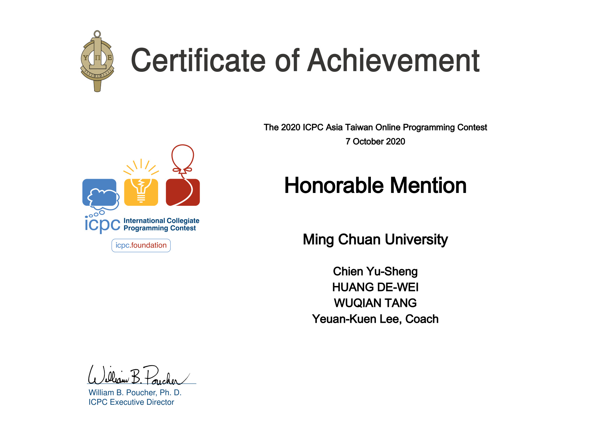

Skip to content
Wuqian Tang
Back to homepage
Awards & Honors · Oct 2020
Honorable Mention, TOPC
Taiwan Online Programming Contest
Materials:
[Certificate]
Certificates
1

Certificate · 2020-10-07 · English
View Original